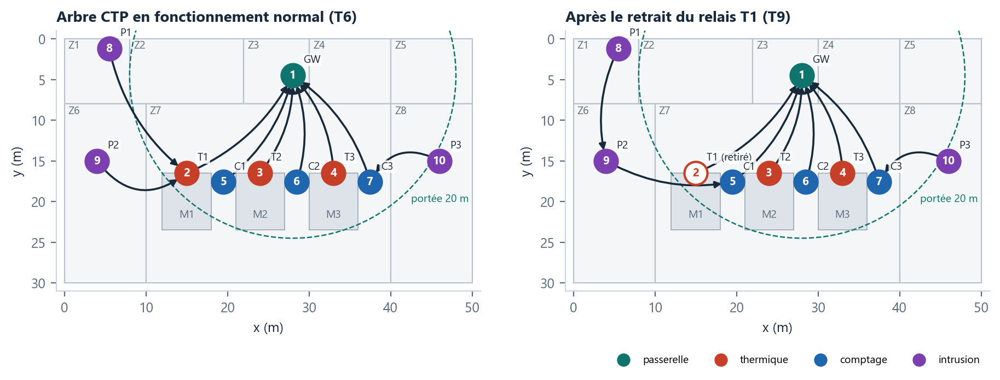
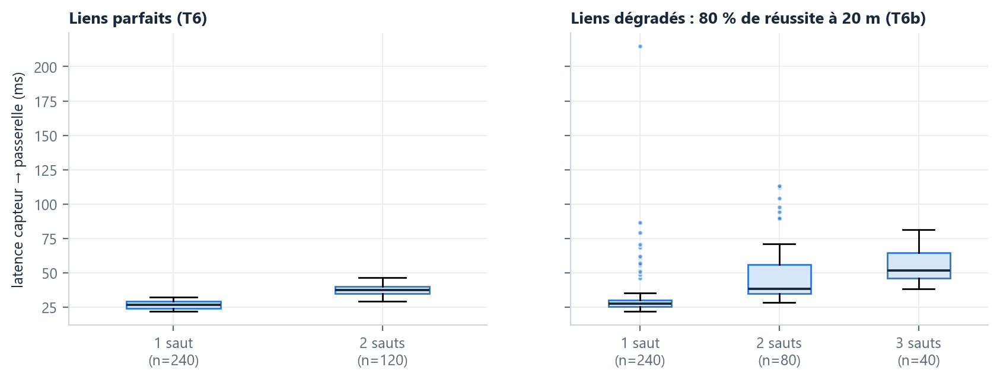
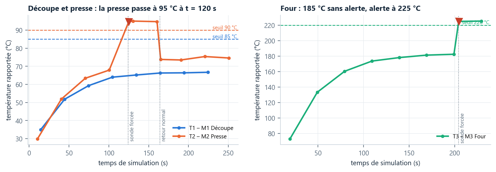

Dix cartes simulées aux positions exactes du plan d'implantation, un réseau radio multi-saut (CTP), des capteurs de température, de comptage et de présence, et une passerelle qui produit les messages MQTT du cahier des charges. Chaque exigence vérifiable a son test automatique ; toutes les valeurs de ce rapport sont extraites des journaux de ces tests. Parmi les exigences non fonctionnelles, le groupe retient les trois plus simples à vérifier : ENF1 (latence < 10 s), ENF6 (messages authentifiés) et ENF8 (un nœud défaillant peut être retiré sans arrêter le reste).
Le système réel (architecture du groupe) repose sur des ESP32 en WiFi et un Raspberry Pi (Mosquitto, Node-RED, InfluxDB, Grafana). Cooja n'émule ni l'ESP32 ni le WiFi : il émule, instruction par instruction, des cartes de réseau de capteurs. On garde donc ce qui fait la difficulté du projet — la géographie de l'usine, les rôles, les exigences temporelles — et on remplace le matériel par son équivalent « réseau de capteurs ».
| Dans l'usine | Dans la simulation | Pourquoi / conséquence |
|---|---|---|
| ESP32 + capteur | Carte Sky (TelosB, MSP430 + radio CC2420), programmée en nesC / TinyOS | Seule carte que TinyOS compile et que Cooja émule ; 10 Ko de RAM, 48 Ko de ROM |
| WiFi 2,4 GHz, point d'accès | IEEE 802.15.4 (250 kbit/s), modèle radio UDGM, portée 20 m | Plus courte portée que le WiFi (30 m retenus) : impose le multi-saut, comme un vrai réseau de capteurs |
| Raspberry Pi (passerelle + serveur) | Nœud 1 : racine CTP, écrit sur son port série une ligne « topic + JSON » par message | Le pont série → MQTT est la seule partie non simulée |
| DS18B20 / thermocouple K | Modèle thermique (montée en régime, dérive, bruit ± 0,3 °C) | Scénario de surchauffe injectable (commande H) |
| Barrière infrarouge FC-51 | Arrivées de pièces aléatoires (2 à 6 s), compteur en flash | 100 pièces injectables (commande +) |
| PIR HC-SR501 + buzzer | Détections aléatoires de jour, présence injectable (P), buzzer = LED bleue | Horloge d'usine accélérée : 1 s = 1 min, départ 17h00 |
| Nœud débranché | Nœud retiré de la simulation (sim.removeMote) | Panne franche, sans prévenir les voisins |
Une application nesC par rôle, avec un dossier commun/ partagé. Cooja charge donc
quatre « types de cartes » ; chaque carte connaît son numéro (TOS_NODE_ID, écrit par
Cooja) et en déduit, grâce à Plan.h généré depuis le plan, son repère, sa machine et son seuil.
| Nœuds | Programme | Ce qu'il fait |
|---|---|---|
| 1 (GW) | passerelle | Racine CTP ; vérifie l'authentification ; écrit topic + JSON ; alertes ; statistiques |
| 2–4 (T1–T3) | thermique | Lecture toutes les 2 s, rapport toutes les 30 s, alerte immédiate au-delà du seuil de SA machine |
| 5–7 (C1–C3) | comptage | +1 à chaque pièce (sauvegarde en flash), rapport toutes les 30 s : cumul + cadence |
| 8–10 (P1–P3) | intrusion | Suit l'heure de l'usine ; de nuit, toute présence → alerte immédiate + buzzer ; rapport de vie toutes les 30 s |
Le JSON du cahier des charges est trop gros et trop coûteux à émettre sur une radio basse consommation. Les capteurs envoient une structure binaire de 22 octets ; c'est la passerelle qui fabrique le JSON. Un exemple de ligne réellement écrite par la passerelle (test T6) :
RX src=4 seq=1 sauts=1 parent=1 age=4 | factory/machines/MACHINE_03 {"node_id":"MACHINE_03","timestamp":1792512014,"temperature_c":73.0,"production_count":2,"status":"OK"}| Champ | Taille | Contenu |
|---|---|---|
| type, etat | 1 + 1 octet | température / comptage / présence ; OK, ALERTE, FIN_ALERTE, VEILLE, ARME, INTRUSION |
| source, seq | 2 + 2 | numéro du nœud et numéro de rapport (sert au taux de livraison et à repérer les doublons) |
| age_ms | 4 | temps passé dans le tampon : la passerelle en déduit l'horodatage réel de la mesure |
| valeur, compteur | 2 + 4 | dixièmes de °C · cadence et cumul de pièces · heure d'usine et nombre de détections |
| parent, etx | 2 + 2 | le premier relais et le coût de route CTP : permet de dessiner l'arbre |
| mac | 2 | code d'authentification calculé avec la clé du réseau (ENF6) |
CTP (Collection Tree Protocol, tos/lib/net/ctp) construit seul un arbre dont la
passerelle est la racine. Chaque nœud estime la qualité de ses liens (ETX : nombre moyen
d'émissions pour réussir un envoi) et choisit le voisin qui minimise le coût total jusqu'à la
racine. À 20 m de portée, P1 (22,7 m), P2 (26,2 m) et P3 (20,8 m) ne voient pas la passerelle :
leurs rapports passent par un relais.

TinyOS est piloté par des événements : pas de boucle infinie, on écrit ce qu'il faut faire
quand « la carte a démarré », « la minuterie a sonné », « un paquet est arrivé ». Un composant
nesC a deux fichiers : une configuration (le câblage, avec des flèches ->) et un
module (le comportement).
configuration ThermiqueAppC {}
implementation {
components MainC, LedsC, RandomC, ConsoleC, PublicationC;
components ThermiqueC as App;
components new TimerMilliC() as Lecture;
components new TimerMilliC() as Rapport;
App.Boot -> MainC;
App.Leds -> LedsC;
App.Random -> RandomC;
App.Console -> ConsoleC;
App.Publication -> PublicationC;
App.Lecture -> Lecture;
App.Rapport -> Rapport;
}thermique/ThermiqueAppC.nc, ligne 7
Le nœud thermique ne connaît ni la radio ni CTP : il utilise PublicationC, notre
service commun, et ConsoleC pour écrire du texte lisible dans Cooja.
event void Lecture.fired() {
if (surchauffe) {
temp = seuil + 50 + aleatoire(3); /* la sonde lit seuil + 5 °C */
} else {
derive += aleatoire(2);
if (derive > 30) derive = 30;
if (derive < -30) derive = -30;
temp += (consigne + derive - temp) / 20;
temp += aleatoire(3); /* bruit ±0,3 °C */
}
if (temp > seuil && !enAlerte) {
enAlerte = TRUE;
call Leds.led2On(); /* LED bleue = machine en alerte */
call Console.texte("DEPASSEMENT temp="); call Console.dixiemes(temp);
call Console.texte(" seuil="); call Console.dixiemes(seuil);
call Console.car('\n');
call Publication.publier(TYPE_TEMPERATURE, ETAT_ALERTE, temp, 0);
} else if (enAlerte && temp <= seuil - HYSTERESIS_DIXIEMES) {
enAlerte = FALSE;
call Leds.led2Off();
call Console.texte("RETOUR_NORMAL temp="); call Console.dixiemes(temp);
call Console.car('\n');
call Publication.publier(TYPE_TEMPERATURE, ETAT_FIN_ALERTE, temp, 0);
}
}
/* --------------------------------------------------------------- rapport périodique */thermique/ThermiqueC.nc, ligne 71
La lecture locale toutes les 2 s ne coûte rien en radio. Sans elle, une surchauffe pourrait attendre jusqu'à 30 s le rapport suivant, ce qui violerait ENF1.
event void Send.sendDone(message_t *m, error_t err) {
if (m != &paquet) return;
occupe = FALSE;
if (err == SUCCESS) {
debut = (debut + 1) % CAPACITE_TAMPON; /* rapport parti : on l'oublie */
nb--;
call Leds.led1Toggle(); /* LED verte = un rapport est parti */
post envoyer(); /* et on enchaîne avec le suivant */
} else {
call Console.texte("ECHEC_ENVOI seq=");
call Console.nombre(tampon[debut].seq);
call Console.texte(" attente=");
call Console.nombre(nb);
call Console.car('\n');
call Reessai.startOneShot(TICKS(REESSAI_MS));
}
}
event void Reessai.fired() { post envoyer(); }
commun/PublicationP.nc, ligne 120
Un rapport ne quitte le tampon que lorsque CTP confirme l'envoi. Si le relais est tombé, CTP finit par renoncer (échec) : le rapport reste en tête du tampon et repart 2 s plus tard, par la nouvelle route.
/* 1. Authentification : on recalcule le code avec NOTRE clé et on compare */
if (calculerMac(r, CLE_RESEAU) != r->mac) {
call Console.texte("REJET_AUTH origine=");
call Console.nombre(call CtpPacket.getOrigin(msg));
call Console.texte(" seq="); call Console.nombre(r->seq);
call Console.texte(" (code d'authentification invalide)\n");
return msg;
}
/* Clé correcte, mais nœud absent du plan ou qui se fait passer pour un autre */
if (r->source > MAX_ID || r->source != call CtpPacket.getOrigin(msg)) {
call Console.texte("REJET_ORIGINE origine=");
call Console.nombre(call CtpPacket.getOrigin(msg));
call Console.texte(" source annoncee="); call Console.nombre(r->source);
call Console.car('\n');
return msg;
}
src = r->source;
s = &suivi[src];
/* THL (« time has lived ») : CTP l'augmente de 1 à chaque réception, y compris
à la racine (CtpForwardingEngineP). C'est donc directement le nombre de sauts. */passerelle/PasserelleC.nc, ligne 124
/* IMPORTANT : pendant l'effacement et l'écriture, le contrôleur de flash bloque le CPU.
Une interruption à ce moment fait planter le MSP430 (mspsim le reproduit :
« Got interrupt while flash controller blocks CPU »). Le module d'origine servait
au chargeur d'amorçage, sans interruptions ; ici on les MASQUE avec atomic. */
atomic {
FCTL2 = FWKEY + FSSEL1 + FN2; /* horloge du contrôleur de flash */
FCTL3 = FWKEY; /* déverrouillage */
FCTL1 = FWKEY + ERASE; /* effacement du segment de destination */commun/FlashInterneC.nc, ligne 49
Le compteur est écrit dans la mémoire flash interne du MSP430 à chaque pièce, et relu au démarrage.
mspsim reproduit fidèlement une contrainte du vrai matériel : une interruption pendant l'écriture
fait planter le microcontrôleur. D'où le bloc atomic.
TIMEOUT(260000, terminer());
var tInj = {}, tDetect = {}, tAlerte = {}, alerteM3Avant = false, finM2 = false, statusAlerte = false;
planifier(120000, function () { tInj[3] = maintenant(); commander(3, "H"); });
planifier(160000, function () { commander(3, "N"); });
planifier(200000, function () { tInj[4] = maintenant(); commander(4, "H"); });
planifier(250000, function () {
var l2 = tAlerte[3] - tInj[3], l3 = tAlerte[4] - tInj[4];
mesure("T2_latence_injection_alerte_M2", l2, "ms");
mesure("T2_latence_detection_alerte_M2", tAlerte[3] - tDetect[3], "ms");
mesure("T2_latence_injection_alerte_M3", l3, "ms");
verdict("T2", tAlerte[3] !== undefined && l2 < 10000,
"M2 a 95 C : alerte " + (l2 / 1000).toFixed(2) + " s apres l'injection (exigence < 10 s, cible 5 s)");
verdict("T2_json_status", statusAlerte, "JSON MACHINE_02 avec status ALERTE publie");
verdict("T2_seuil_par_machine", !alerteM3Avant && tAlerte[4] !== undefined && l3 < 10000,
"M3 a ~185 C sans alerte (seuil 220 C), puis alerte a 225 C en " + (l3 / 1000).toFixed(2) + " s");
verdict("T2_fin_alerte", finM2, "FIN_ALERTE SURCHAUFFE MACHINE_02 apres retour a la normale");
terminer();
});
while (true) {
YIELD();
if (executerAction()) continue;
noter();scenarios/tests/T2_surchauffe.js, ligne 8
Le script, exécuté par le plugin ScriptRunner de Cooja, reçoit chaque ligne écrite par chaque carte,
injecte des événements sur les ports série (commander(3, "H")), mesure les délais avec
l'horloge de Cooja (commune à tous les nœuds) et écrit ses verdicts.
| Test | Durée simulée | Scénario |
|---|---|---|
| T1 | 10 min | fonctionnement normal ; on mesure l'écart entre rapports de chaque capteur |
| T2 | 4 min | t = 120 s : sonde de M2 à 95 °C ; t = 160 s : retour normal ; t = 200 s : four M3 à 225 °C |
| T4 | 4 min | C1 : arrêt des arrivées, remise à zéro, 100 pièces ; C2 : redémarrage forcé à t = 150 s |
| T5 | 16 min | présences à 17h30 (P2), 19h00 (P1, P2, P3) et 08h30 le lendemain (P3) |
| T6 / T6b | 20 min | fonctionnement normal, 10 nœuds ; T6b : 80 % de réussite radio en limite de portée |
| T9 | 10 min | t = 5 min : retrait du nœud T1, relais de P1 |
| ENF6 | 5 min | un 11e nœud, programmé avec une autre clé, posé près de T2 |
| Nœud | x ; y (m) | Parent CTP | Sauts | Latence moy. (ms) | max (ms) | PDR T6 | PDR T6b |
|---|---|---|---|---|---|---|---|
| T1 (2) | 15 ; 16.5 | 1 (GW) | 1 | 27,3 | 32 | 100,0 % | 100,0 % |
| T2 (3) | 24 ; 16.5 | 1 (GW) | 1 | 27,0 | 32 | 100,0 % | 100,0 % |
| T3 (4) | 33 ; 16.5 | 1 (GW) | 1 | 27,1 | 32 | 100,0 % | 100,0 % |
| C1 (5) | 19.5 ; 17.6 | 1 (GW) | 1 | 26,9 | 31 | 100,0 % | 100,0 % |
| C2 (6) | 28.5 ; 17.6 | 1 (GW) | 1 | 26,6 | 31 | 100,0 % | 100,0 % |
| C3 (7) | 37.5 ; 17.6 | 1 (GW) | 1 | 26,0 | 31 | 100,0 % | 100,0 % |
| P1 (8) | 5.5 ; 1.2 | 2 (T1) | 2 | 38,2 | 46 | 100,0 % | 100,0 % |
| P2 (9) | 4 ; 15 | 2 (T1) | 2 | 37,0 | 46 | 100,0 % | 100,0 % |
| P3 (10) | 46 ; 15 | 7 (C3) | 2 | 37,3 | 47 | 100,0 % | 100,0 % |

La latence mesurée inclut l'écriture de la ligne JSON sur le port série de la passerelle (≈ 11 ms à 115 200 bit/s) : la part radio est encore plus faible. On est très loin du budget de 1 s du cahier pour le trajet nœud → passerelle.
Dans cet essai, chaque nœud à portée du puits lui parle directement, et seuls P1, P2 et P3 passent par un relais. CTP choisit ses routes au démarrage d'après la qualité mesurée des liens et ne change de parent que si le gain dépasse un seuil (hystérésis) : selon les premiers paquets perdus, un nœud proche peut parfois rester sur un relais (observé lors d'essais précédents).

De la mise à 95 °C à la ligne ALERTE SURCHAUFFE MACHINE_02 :
0,87 s, dont
39 ms entre la détection sur le nœud et l'alerte
— le reste est l'attente de la lecture suivante (au plus 2 s). Cible de 5 s tenue.
T4 : après 100 pièces, le compteur local vaut 100 et
la passerelle publie "production_count":100.
Le nœud C2, redémarré par son chien de garde à 42 pièces,
relit 42 dans sa flash ; la passerelle détecte le redémarrage
(numéro de rapport revenu à 1).
T5 : de nuit, l'alerte arrive en 47, 47 et 49 ms pour les zones 1, 2 et 3 (deux sauts chacune), avec le buzzer local. Les présences à 17h30 et à 08h30 ne déclenchent aucune alerte.
| Mesure (depuis le retrait de T1) | Valeur |
|---|---|
| P1 choisit un nouveau parent | 15,2 s — s (P1 : parent 2 -> 9) |
| Premier rapport de P1 reçu par le nouveau chemin | 44,0 s — s (premier rapport de P1 recu, 3 sauts) |
| La passerelle signale « NOEUD_MUET T1 » | 84,5 s (seuil : 3 périodes + 5 s sans nouvelles) |
| Taux de livraison des 8 autres capteurs après la panne | 100,0 % |
CTP ne détecte la panne qu'en essayant d'envoyer : P1 découvre l'absence de T1 à son rapport suivant, épuise ses retransmissions, puis change de parent. Le rapport retardé n'est pas perdu : il reste dans le tampon et repart par la nouvelle route.
Les 10 rapports de l'intrus (même programme, autre clé)
sont tous rejetés (REJET_AUTH), et aucun rapport légitime ne l'est. Le code
d'authentification est calculé par le capteur et vérifié par la passerelle : un relais ne peut pas
modifier un rapport sans être détecté.
| Exigence | Test | Valeur mesurée | Verdict |
|---|---|---|---|
| EF1 — une mesure toutes les 30 s ± 2 s | T1 (10 min, 9 capteurs) | écart entre rapports : 30,00 à 30,00 s (174 intervalles) | ✔ conforme |
| EF1 — valeur transmise sans altération | T1 | 61 temperatures comparees capteur/passerelle, 0 differentes | ✔ conforme |
| EF2 + ENF1 — 95 °C → alerte < 10 s (cible 5 s) | T2 (presse M2, seuil 90 °C) | alerte 0,87 s après la mise à 95 °C | ✔ conforme |
| EF2 — seuil propre à chaque machine | T2 (four M3, seuil 220 °C) | 185 °C sans alerte ; 225 °C → alerte en 0,32 s | ✔ conforme |
| EF5 — 100 pièces → compteur = 100 | T4 (poste C1) | compteur local 100, reçu par la passerelle 100 | ✔ conforme |
| EF5 — le compteur survit à un redémarrage | T4 (poste C2, chien de garde) | 42 pièces avant, 42 restaurées | ✔ conforme |
| EF6 — présence hors 08h–18h → alerte < 5 s | T5 (P1, P2, P3 à 19h00) | alerte en 0,05 s au pire (3 zones), buzzer local activé | ✔ conforme |
| B4 — pas d'alerte pendant les heures ouvrées | T5 (17h30 et 08h30) | 0 alerte(s) pendant les heures ouvrees (presences a 17h30 et 08h30) | ✔ conforme |
| ENF1 / T6 — latence totale < 10 s | T6 (20 min, 10 nœuds) | capteur → passerelle : moyenne 30,4 ms, max 47 ms | ✔ conforme |
| ENF1 — budget nœud → passerelle < 1 s | T6 | 95 % des rapports en moins de 42 ms | ✔ conforme |
| B3 — données centralisées (taux de livraison) | T6 / T6b | PDR 100,00 % (liens parfaits), 100,00 % (liens dégradés) | ✔ conforme |
| ENF8 / T9 — un nœud retiré, les autres continuent | T9 (retrait du relais T1) | 8/8 capteurs continuent, PDR après la panne 100,0 % | ✔ conforme |
| ENF8 — reconvergence du routage | T9 (P1, qui passait par T1) | nouveau parent en 15,2 s, rapports rétablis en 44,0 s | ✔ conforme |
| ENF8 — détection du nœud défaillant | T9 | alerte NOEUD_MUET après 84 s | ✔ conforme |
| ENF6 — messages authentifiés | ENF6 (11e nœud sans la clé) | 10 rapports de l'intrus rejetés, 0 rapport légitime rejeté | ✔ conforme |
T3 et T8 (non rappelés dans la consigne) ne sont pas traités.
| Journal | Vérification | Détail (tel qu'écrit par le script) | Résultat |
|---|---|---|---|
T1_periode | T1 | 9 capteurs, 174 intervalles entre 30.00 et 30.00 s (tolerance 28-32 s) | ✔ conforme |
T1_periode | T1_fidelite | 61 temperatures comparees capteur/passerelle, 0 differentes | ✔ conforme |
T2_surchauffe | T2 | M2 a 95 C : alerte 0.87 s apres l'injection (exigence < 10 s, cible 5 s) | ✔ conforme |
T2_surchauffe | T2_json_status | JSON MACHINE_02 avec status ALERTE publie | ✔ conforme |
T2_surchauffe | T2_seuil_par_machine | M3 a ~185 C sans alerte (seuil 220 C), puis alerte a 225 C en 0.32 s | ✔ conforme |
T2_surchauffe | T2_fin_alerte | FIN_ALERTE SURCHAUFFE MACHINE_02 apres retour a la normale | ✔ conforme |
T4_comptage | T4 | 100 pieces injectees : compteur local=100, production_count recu=100 | ✔ conforme |
T4_comptage | T4_redemarrage | C2 redemarre a 42 pieces, RESTAURE compteur=42, passerelle voit REDEMARRAGE puis production_count=43 | ✔ conforme |
T5_intrusion | T5 | alertes de nuit : ZONE_01=0.05 s ZONE_02=0.05 s ZONE_03=0.05 s (exigence < 5 s, buzzer local actif) | ✔ conforme |
T5_intrusion | T5_pas_alerte_de_jour | 0 alerte(s) pendant les heures ouvrees (presences a 17h30 et 08h30) | ✔ conforme |
T6_reseau | T6 | latence capteur->passerelle max 47 ms, moyenne 30.4 ms sur 360 rapports (exigence < 10 s) | ✔ conforme |
T6_reseau | T6_budget_radio | 95 % des rapports en moins de 42 ms (budget noeud->passerelle < 1 s) | ✔ conforme |
T6_reseau | T6_pdr | taux de livraison 100.00 % (seuil 99 %) | ✔ conforme |
T6_reseau | T6_multisaut | P1, P2, P3 hors de portee du puits : sauts = 2, 2, 2 | ✔ conforme |
T6b_pertes | T6b | latence capteur->passerelle max 215 ms, moyenne 37.7 ms sur 360 rapports (exigence < 10 s) | ✔ conforme |
T6b_pertes | T6b_pdr | taux de livraison 100.00 % (seuil 98 %) | ✔ conforme |
T9_panne | T9 | T1 retire : 8/8 autres capteurs continuent, PDR apres panne 100.0 % | ✔ conforme |
T9_panne | T9_reroutage_P1 | P1 passe par 9 (3 sauts), rapports retablis en 44.0 s | ✔ conforme |
T9_panne | ENF8_detection | passerelle signale NOEUD_MUET T1 apres 84.5 s | ✔ conforme |
ENF6_auth | ENF6 | 10 rapports de l'intrus rejetes, 0 acceptes ; 0 rapport legitime rejete | ✔ conforme |
mosquitto_pub suffit pour alimenter Node-RED, InfluxDB et Grafana. En WiFi, CTP
disparaît (le point d'accès joue la racine).